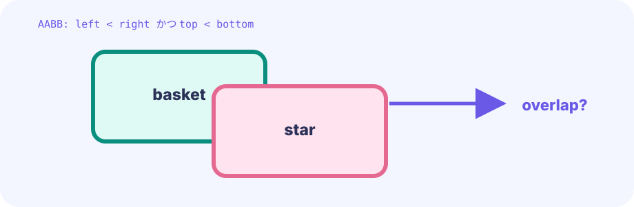

Movement
Stars add speed to Y on each Update. The basket only changes X from keys or a pointer.
star.y += speed★★☆☆☆ / PLAYABLE
Catch falling stars with a basket. Movement, falling objects, and overlap checks — this is the step where “game objects” multiply. Drop three stars and it's game over, so don't let too many slip past.
On screen you see original hero Ebi Tenjiroh; hits still use simple shapes. As in the LEVEL 01 state boundary, only Update mutates positions and score. Draw projects those values and never changes game state.
PLAYABLE / WEBASSEMBLY
Arrow keys, WASD, and drag all work. Drop three stars and the round ends.
FIRST-TIME READER
Find where this one line is used, then follow how its value changes on screen. This is the shared game-state boundary: add rules in Update, then choose an independent presentation in Draw. The numbered steps below add one system at a time.
ONE RULE TO TRACE
Match the explanation to this line, then test the change in the game.
stars = append(stars, newStar())Invisible boxes
Even a round-looking star can start as a simple rectangle. The basket only needs horizontal movement, so keep Y at a steady height and change X with the pointer or keys.
change basket.x only

DEEP DIVE / MOVEMENT & BOX HITS
Treat the star and basket as invisible rectangles. If those boxes overlap, the catch succeeds. You do not need the acronym—just “do the boxes overlap?”
Stars add speed to Y on each Update. The basket only changes X from keys or a pointer.
star.y += speedStars live in a slice (list), not one variable. New stars are appended on a timer.
stars []starIf left/right and top/bottom both overlap, it is a hit. Separated on any side means a miss.
overlaps(a, b)TRY IT / RECTANGLE OVERLAP
“One Update” lowers the star. The moment its box overlaps the basket, the verdict becomes YES.
Even round art often uses a rectangle for hits first. Start with boxes, refine later if needed.
TRY IT · GO
star.y += star.speed basket.x = clamp(pointerX) if overlaps(starBox, basketBox) { score++ }
—
THE OVERLAP RULE
left < other.right AND right > other.leftandtop < other.bottom AND bottom > other.topBoth axes must overlap for a hit. Overlap on only one axis is a near miss.
IN THE REAL GAME
The idea is simple: look at each star, drop caught stars and missed stars from the list, and move only the surviving stars into a new list.
for _, s := range g.stars {
s.y += s.speed
if overlaps(s, g.basket) {
g.score++
continue // caught, do not keep
}
if s.y > height {
g.lives--
continue
}
next = append(next, s)
}
g.stars = nextg.stars[:0] means (fine to skip)The code writes next := g.stars[:0], which is not "a fresh empty list" — it reuses the same underlying array memory at length 0. A plain var next []star gives the same result; the slice trick just avoids allocating new memory every tick.
The Y band 625–675 is a catchable thickness around the basket near y≈640. Retry uses *g = *newGame(): same pointer, brand-new contents.
TODAY — look here first
The code below is the game's main logic (the hero art loads from shared package internal/hero). Copy it to your editor — but first follow the three “look here first” points above.
Note: inline comments in this full listing are in Japanese for young learners. The English teaching snippets above are your guide.
package main
import (
"fmt"
"image/color"
"math/rand"
"github.com/hajimehoshi/ebiten/v2"
"github.com/hajimehoshi/ebiten/v2/ebitenutil"
"github.com/hajimehoshi/ebiten/v2/vector"
"github.com/kumagi/EbiShowcase/internal/hero"
"github.com/kumagi/EbiShowcase/internal/lessonlogic"
)
const (
screenWidth = 480
screenHeight = 720
basketY = 640
basketHalfW = 58
)
// 落ちてくる星 1つ
type star struct {
x, y float64
speed float64
}
type game struct {
basketX float64
stars []star
frame int
score int
lives int
gameOver bool
rng *rand.Rand
}
func newGame() *game {
return &game{
basketX: screenWidth / 2,
lives: 3,
rng: rand.New(rand.NewSource(19)),
}
}
func restartPressed() bool {
if ebiten.IsMouseButtonPressed(ebiten.MouseButtonLeft) {
return true
}
if len(ebiten.AppendTouchIDs(nil)) > 0 {
return true
}
return false
}
// キーボード・マウス・タッチでカゴを動かす
func (g *game) moveBasket() {
if ebiten.IsKeyPressed(ebiten.KeyArrowLeft) || ebiten.IsKeyPressed(ebiten.KeyA) {
g.basketX -= 5
}
if ebiten.IsKeyPressed(ebiten.KeyArrowRight) || ebiten.IsKeyPressed(ebiten.KeyD) {
g.basketX += 5
}
if ebiten.IsMouseButtonPressed(ebiten.MouseButtonLeft) {
x, _ := ebiten.CursorPosition()
g.basketX = float64(x)
}
if ids := ebiten.AppendTouchIDs(nil); len(ids) > 0 {
x, _ := ebiten.TouchPosition(ids[0])
g.basketX = float64(x)
}
// 画面の端から出ないようにする
if g.basketX < 55 {
g.basketX = 55
}
if g.basketX > screenWidth-55 {
g.basketX = screenWidth - 55
}
}
// 星がカゴに入ったか（AABB：四角どうしの重なり）
func (g *game) caught(s star) bool {
inY := s.y > 625 && s.y < 675
inX := s.x > g.basketX-basketHalfW && s.x < g.basketX+basketHalfW
return inY && inX
}
// --- ここから Update ---
func (g *game) Update() error {
if g.gameOver {
if restartPressed() {
*g = *newGame()
}
return nil
}
g.moveBasket()
g.frame++
// 45 tickごとに星を1つ出す
if g.frame%45 == 0 {
g.stars = append(g.stars, star{
x: 25 + g.rng.Float64()*(screenWidth-50),
y: -20,
speed: 2.6 + g.rng.Float64()*2,
})
}
// 残す星だけを next に集める
next := g.stars[:0]
for _, s := range g.stars {
s.y += s.speed
switch lessonlogic.ClassifyFallingObject(g.caught(s), s.y, screenHeight) {
case lessonlogic.FallingCaught:
g.score++
continue // 取れたので消す
case lessonlogic.FallingMissed:
g.lives--
if g.lives <= 0 {
g.gameOver = true
}
continue // 落としたので消す
}
next = append(next, s)
}
g.stars = next
return nil
}
// --- ここから Draw ---
func (g *game) Draw(screen *ebiten.Image) {
screen.Fill(color.RGBA{7, 20, 38, 255})
// うすい星空
for i := 0; i < 24; i++ {
vector.DrawFilledCircle(
screen,
float32((i*97)%screenWidth),
float32((i*53+g.frame/4)%screenHeight),
1.5,
color.RGBA{45, 226, 194, 120},
false,
)
}
for _, s := range g.stars {
vector.DrawFilledCircle(screen, float32(s.x), float32(s.y), 15, color.RGBA{255, 210, 72, 255}, false)
vector.DrawFilledCircle(screen, float32(s.x-5), float32(s.y-5), 4, color.White, false)
}
vector.DrawFilledRect(screen, float32(g.basketX-basketHalfW), basketY, 116, 38, color.RGBA{45, 226, 194, 255}, false)
vector.DrawFilledRect(screen, float32(g.basketX-48), 630, 96, 12, color.RGBA{255, 105, 79, 255}, false)
// カゴを持つ主人公
hero.DrawBottomCentered(screen, g.basketX, basketY+8, 56)
ebitenutil.DebugPrintAt(screen, fmt.Sprintf("SCORE %02d LIVES %d", g.score, g.lives), 170, 25)
if g.gameOver {
ebitenutil.DebugPrintAt(screen, "GAME OVER\n\nCLICK / TOUCH TO RETRY", 155, 320)
} else {
ebitenutil.DebugPrintAt(screen, "MOVE: ARROWS / DRAG", 170, 690)
}
}
func (g *game) Layout(_, _ int) (int, int) {
return screenWidth, screenHeight
}
func main() {
ebiten.SetWindowSize(screenWidth, screenHeight)
ebiten.SetWindowTitle("Catch the Stars — Ebitengine")
if err := ebiten.RunGame(newGame()); err != nil {
panic(err)
}
}
BUILD IT LINE BY LINE / UPDATE WORKSHOP
LEVEL 03 introduces slices. One loop can apply the same rule to any number of stars.
Some braces intentionally stay open between pieces, so intermediate code may not compile yet. Each card explains what to paste, why it belongs here, and which Go feature helps. The snippets are extracted from the running game; after the final paste, Update exactly matches the real one.
Replacing *g with a fresh game resets old stars and random state together, then returns before gameplay runs.
func (g *game) Update() error {
if g.gameOver {
if restartPressed() {
*g = *newGame()
}
return nil
}Input changes position before collision checks, so a basket moved onto a star catches it in the same tick.
g.moveBasket()Increment frame and create a star only when it divides evenly by 45. A struct literal groups named x, y, and speed values.
g.frame++
// 45 tickごとに星を1つ出す
if g.frame%45 == 0 {
g.stars = append(g.stars, star{
x: 25 + g.rng.Float64()*(screenWidth-50),
y: -20,
speed: 2.6 + g.rng.Float64()*2,
})
}g.stars[:0] makes an empty slice that reuses storage. range visits each star, then its copied value is advanced.
// 残す星だけを next に集める
next := g.stars[:0]
for _, s := range g.stars {
s.y += s.speedswitch separates caught, missed, and still falling. continue skips append, so those stars disappear; the rest enter next.
switch lessonlogic.ClassifyFallingObject(g.caught(s), s.y, screenHeight) {
case lessonlogic.FallingCaught:
g.score++
continue // 取れたので消す
case lessonlogic.FallingMissed:
g.lives--
if g.lives <= 0 {
g.gameOver = true
}
continue // 落としたので消す
}
next = append(next, s)
}
g.stars = next
return nil
}Update owns only input and advancing game state. Replace Draw with another presentation and the controls, timing, collisions, and outcomes assembled here remain unchanged.
WITHOUT LISTS
One variable per star hits a wall fast. A list lets every star follow the same rule.
WITH BOX HITS
Even with simple art, correct rectangle overlap already feels like a real catch.
YOUR FIRST RULE
In games/core/catch-stars/main.go, add missStreak int to game. In Update's s.y > screenHeight miss branch add g.missStreak++; reset it to zero immediately after g.caught(s). When it reaches three, add an Update-side branch that makes the next star slightly slower. Draw only displays the streak. Verify with go test ./... and a local run.
Stars in this game fall at one constant speed stored in speed. The next level adds acceleration—changing speed on each Update—to make an arc that rises first and then falls.
FEEDBACK